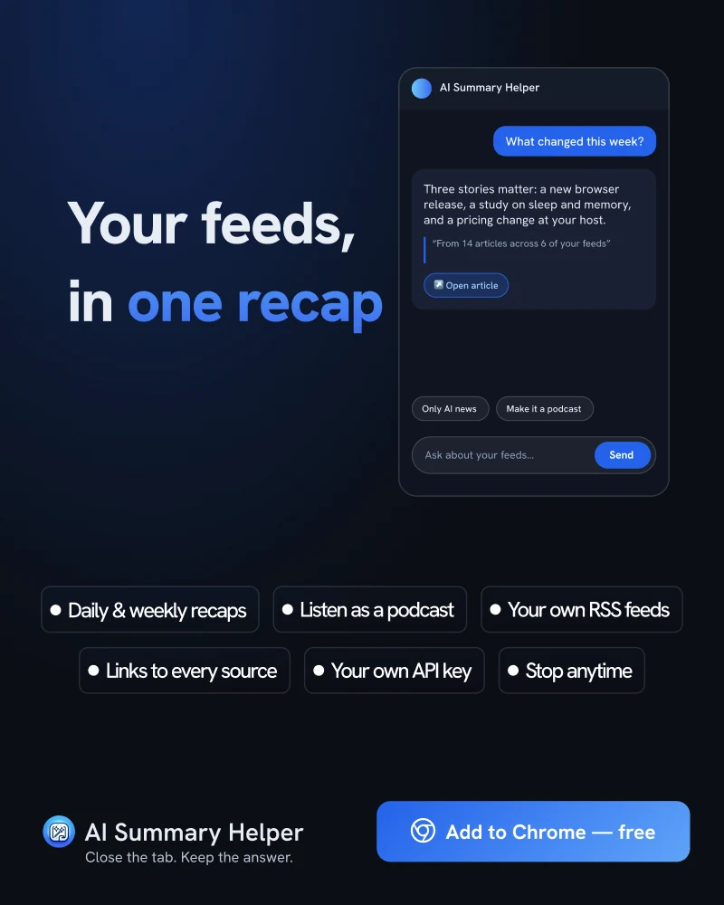

One Recap Instead of 40 Feeds
Forty feeds means forty small interruptions before lunch. A recap turns them into one thing you read once.
In 2009, Sophie Leroy described what she called attention residue: when you switch from one task to another, part of your attention stays with the task you left. In her experiments, people who had been interrupted on one task did worse on the next one, and the effect was stronger when they had to hurry.
A feed reader is a machine for switching tasks. Each item is a different topic, a different tone, a different tab. Even if every item is quick, the residue adds up. By the time you are back at your actual work, part of you is still thinking about a pricing change at a hosting provider.
Why “inbox zero” for feeds never works
Unread counts turn reading into a chore. The good feeds are good precisely because they publish often, which means the number only goes up. People respond by declaring bankruptcy, marking everything read, and slowly drifting back to the pile.
What a recap changes
The Feeds tab in AI Summary Helper lets you subscribe to the RSS feeds you actually follow. Instead of a list of items, you ask for a recap: one piece, daily or weekly, that covers what came in and links to the articles behind it. You read it once, in one sitting, and the rest of the day is not shaped by what the internet published at 10:42.
You can also listen to it as a podcast, which is useful when the alternative is not reading at all. The recap runs on whichever provider you have set up with your own key, the same way a summary does.

Setting it up so it helps
- Cut the list first. Keep the feeds you would miss. Recaps get better when the input is better.
- Pick one time of day. A recap read at a fixed time replaces the habit of checking. A recap you check hourly is just a slower feed.
- Follow the links you care about. Every item in the recap points to its source, so a summary is a doorway rather than a replacement for reading.
The aim is not to read less out of laziness. It is to decide once, deliberately, what gets your attention, instead of forty times by accident.
AI Summary Helper is a free Chrome extension.
Add to Chrome